17 Probability Distributions
17.1 Probability Density/Mass Functions
A probability density function (PDF) takes a value and returns the probability of that value for a continuous probability distribution. For discrete probability distributions, such as the binomial distribution, this is called a probability mass function (PMF) instead. Each common distribution in R comes with a dfunction() which calculates the output of a PDF/PMF for a given input. Let’s take a look at the PDF/PMFs of common probability distributions.
Bernoulli Distribution
The Bernoulli distribution is a special case of the Binomial distribution where n = 1. It is the most commonly used type of Binomial distribution because we work with so many 0/1 variables in the social sciences.
Properties:
- Notation: X \sim Bernoulli(p)
- PMF: p^k(1-p)^{1-k}
- Mean: \mathbb{E}[X] = p
- Variance: var[X] = p(1-p)
df <- tibble(groups = c("p = 0.1", "p = 0.5", "p = 0.7"),
probs = c(0.1, 0.5, 0.7)) |>
crossing(x = c(0, 1)) |>
mutate(d = dbinom(x = x, size = 1, prob = probs))
bernoulli_pmf <- ggplot(df) +
aes(x = x, y = d) +
geom_bar(stat = "identity", width = .1) +
labs(y = "Probability") +
scale_x_continuous(breaks = 0:1) +
facet_wrap(~ groups, nrow = 3) +
theme_minimal()
bernoulli_pmf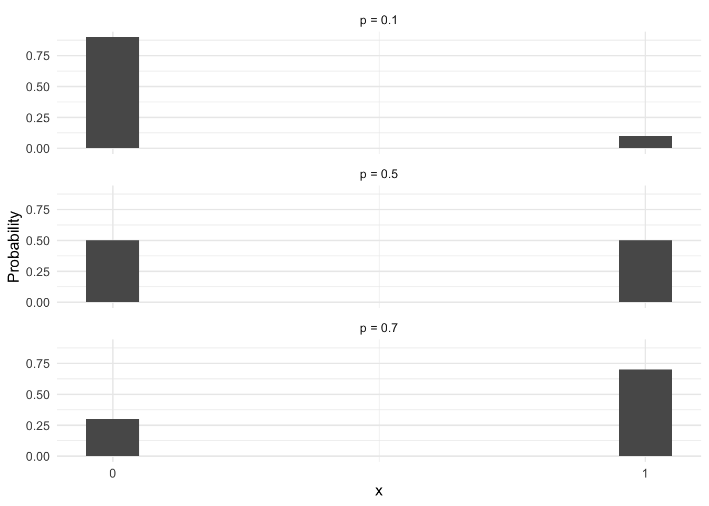
To find the height of these bars use dbinom(size = 1). For example, to find the height of the bar in the top left of the graph (i.e. the probability of 0 in Bernoulli(p = 0.1)) we would use:
dbinom(x = 0, size = 1, p = 0.1)[1] 0.9Poisson Distribution
The Poisson distribution is used to count discrete events that occur given some underlying rate, \lambda. For example, it could be used to model the prevalence of the occurrence of war over a specific time period.
Properties:
- Notation: X \sim Poisson(\lambda)
- PMF: \frac{\lambda^k}{k!}e^{-k}
- Mean: \mathbb{E}[X] = \lambda
- Variance: var[X] = \lambda
df <- tibble(groups = c("lambda = 0.5", "lambda = 2", "lambda = 4", "lambda = 8"),
lambda = c(0.5, 2, 4, 8)) |>
crossing(x = 0:15) |>
mutate(d = dpois(x = x, lambda = lambda))
poisson_pmf <- ggplot(df) +
aes(x = x, y = d) +
geom_bar(stat = "identity", width = 0.1) +
labs(y = "Probability") +
scale_x_continuous(breaks = 0:15) +
facet_wrap(~ groups) +
theme_minimal()
poisson_pmf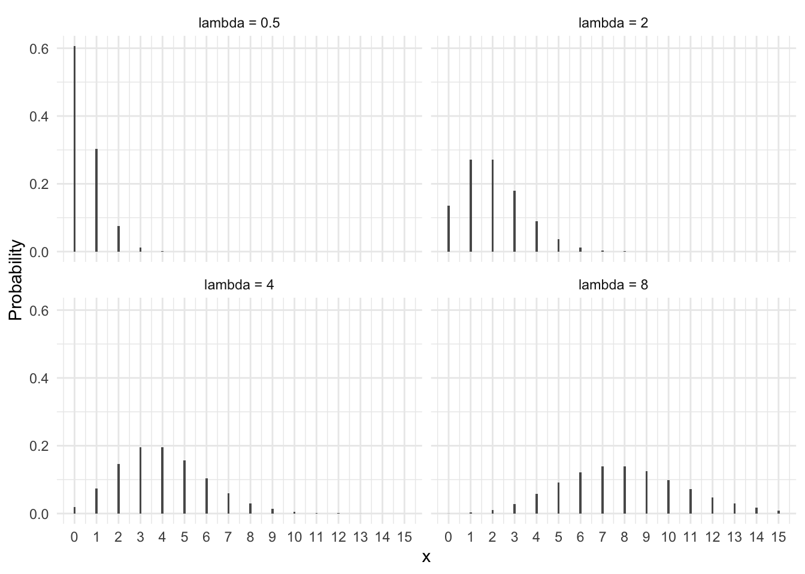
Finding the probability for a specific value of x, given a poisson pdf with a specific lambda:
dpois(x = 0, lambda = 0.5)[1] 0.6065307Normal Distribution
The Normal distribution is ubiquitous in statistics and arises when an outcome is the product of many small fluctuations. It has many nice mathematical qualities which make it a useful approximation even when the true distribution is somewhat different. Unlike the Bernoulli, Binomial, and Poisson distributions, the Normal distribution is continuous. This means that it can output any real numbered value rather than only discrete ones.
Properties:
- Notation: X \sim Normal(\mu, \sigma)
- PDF: \frac{1}{\sqrt{2\pi\sigma^2}}\exp[-\frac{x-\mu)^2}{2\sigma^2}]
- Mean: \mathbb{E}[X] = \mu
- Variance: var[X] = \sigma^2
df <- tibble(groups = c("mu = 0, sigma = 1",
"mu = 0, sigma = 2"),
mu = c(0, 0),
sigma = c(1, 2)) |>
crossing(x = seq(from = -6, to = 6, length.out = 1000)) |>
mutate(d = dnorm(x = x, mean = mu, sd = sigma))
normal_pdf <- ggplot(df) +
aes(x = x, y = d) +
geom_line() +
labs(y = "Probability") +
scale_x_continuous(breaks = -6:6) +
facet_wrap(~groups, nrow = 2) +
theme_minimal()
normal_pdf
The height at the curve for any value x tells us the probability of x.
std_normal_pdf <- ggplot(df |> filter(groups == "mu = 0, sigma = 1",
abs(x) <= 4)) +
aes(x = x, y = d) +
geom_line() +
labs(y = "Probability", title = "mu = 0, sigma = 1") +
scale_x_continuous(breaks = -4:4) +
theme_minimal()
std_normal_pdf +
geom_segment(x = -5, y = dnorm(-1),
xend = -1, yend = dnorm(-1),
linetype = "dashed") +
geom_segment(x = -1, y = 0,
xend = -1, yend = dnorm(-1),
linetype = "dashed")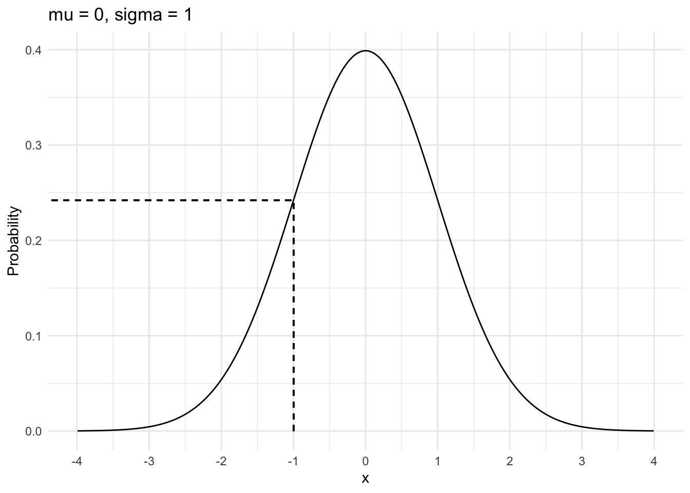
To manually calculate the value at the dashed line above we can use:
dnorm(x = 1, mean = 0, sd = 1)[1] 0.2419707Exponential
The Exponential distribution can be used to model an amount of time between events. It is characterized by a rate parameters, \lambda which is similar to that of the Poisson distribution. But unlike the Poisson distribution, which models discrete counts of events, the Exponential distribution is continuous. The Exponential distribution only returns positive values, which makes it useful to use as a prior distribution for something like standard deviation.
Properties:
- Notation: X \sim Exponential(\lambda)
- PDF: \lambda e^{-\lambda x}
- Mean: \mathbb{E}[X] = \frac{1}{\lambda}
- Variance: var[X] = \frac{1}{\lambda^2}
df <- tibble(groups = c("lambda = 0.5",
"lambda = 1",
"lambda = 1.5"),
lambda = c(0.5, 1, 1.5)) |>
crossing(x = seq(from = 0, to = 3, length.out = 1000)) |>
mutate(d = dexp(x = x, rate = lambda))
exponential_pdf <- ggplot(df) +
aes(x = x, y = d) +
geom_line() +
labs(y = "Probability") +
scale_x_continuous(breaks = 0:3) +
facet_wrap(~groups, nrow = 3) +
theme_minimal()
exponential_pdf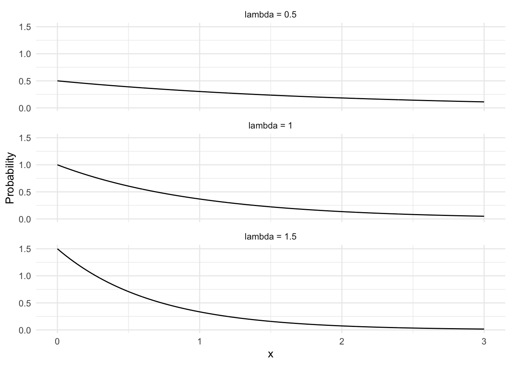
Uniform
The Uniform distribution is a continuous distribution which assigns equal probability to all values between a minimum and maximum.
Properties:
- Notation: X \sim Uniform(a, b)
- PDF: \frac{1}{b-a}
- Mean: \mathbb{E}[X] = \frac{1}{2}(a + b)
- Variance: var[X] = \frac{1}{12}(b-a)^2
df <- tibble(groups = c("min = 0, max = 1",
"min = -3, max = 0",
"min = 1, max = 3"),
mins = c(0, -3, 1),
maxes = c(1, 0, 3)) |>
crossing(x = seq(from = -4, to = 4, length.out = 1000)) |>
mutate(d = dunif(x = x, min = mins, max = maxes))
uniform_pdf <- ggplot(df) +
aes(x = x, y = d) +
geom_line() +
labs(y = "Probability") +
scale_x_continuous(breaks = -4:4) +
facet_wrap(~groups, nrow = 3) +
theme_minimal()
uniform_pdf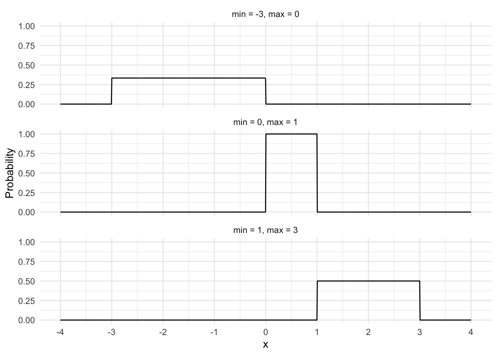
Beta Distribution
The Beta distribution is used to model data that fall between 0 and 1 (such as proportions). It is very flexible as you can see from the graphs below.
Properties:
- Notation: X \sim Beta(\alpha, \beta)
- PDF: \frac{x^{\alpha-1}(1-x)^{\beta-1}} {\Beta(\alpha,\beta)} \ \text{where} \ \Beta(\alpha,\beta) = \frac{\Gamma(\alpha)\Gamma(\beta)}{\Gamma(\alpha + \beta)}
- Mean: \mathbb{E}[X] = \frac{\alpha}{\alpha + \beta}
- Variance: var[X] = \frac{\alpha\beta}{(\alpha+\beta)^2(\alpha+\beta+1)}
df <- tibble(groups = c("alpha = 0.5. beta = 0.5",
"alpha = 1, beta = 1",
"alpha = 3, beta = 3",
"alpha = 10, beta = 10"),
alpha = c(.75, 1, 3, 10),
beta = c(.75, 1, 3, 10)) |>
crossing(x = seq(from = 0, to = 1, length.out = 1000)) |>
mutate(d = dbeta(x = x, shape1 = alpha, shape2 = beta))
beta_pdf <- ggplot(df) +
aes(x = x, y = d) +
geom_line() +
labs(y = "Probability Density") +
scale_x_continuous(breaks = seq(0, 1, by = 0.1)) +
facet_wrap(~groups) +
theme_minimal()
beta_pdf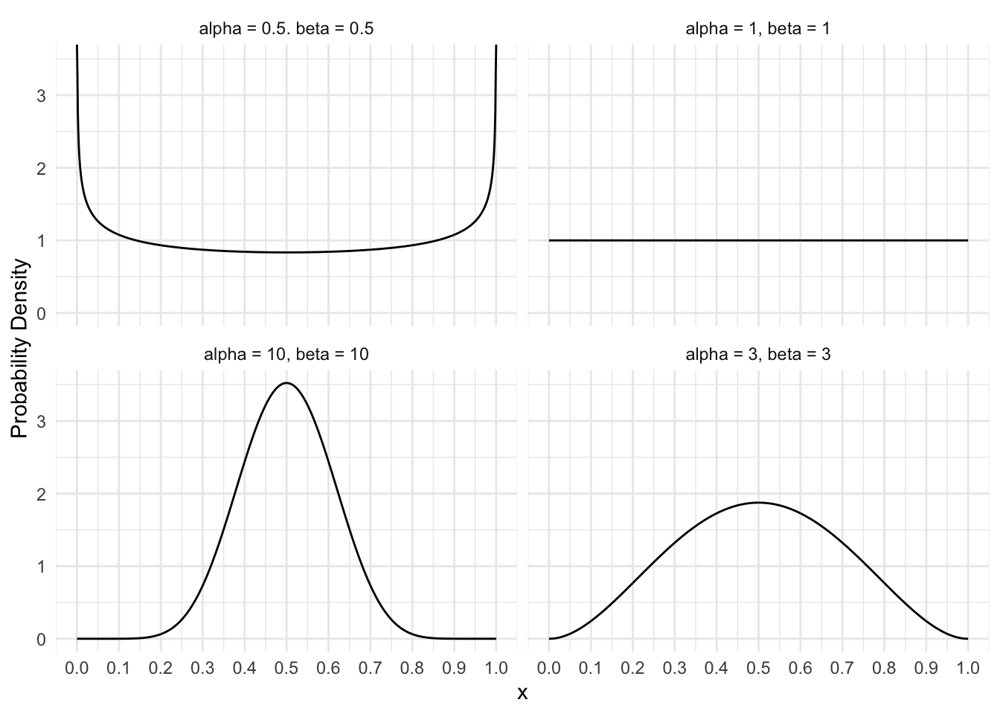
17.2 Cumulative Density Functions
While probability density functions tell us the probabilities for single values, we are often interested in the probability of a range of values. What is the probability of some value less than one? What is the probability of something between four and seven? To answer these types of questions using a PDF, we would have to use integration. For example, the area in the graph below corresponds to the following probability:
\int^{-1}_{-\infty} Normal(0, 1)
std_normal_pdf +
geom_area(aes(fill = x < -1)) +
scale_fill_manual(values = c("transparent", "blue"), breaks = NULL)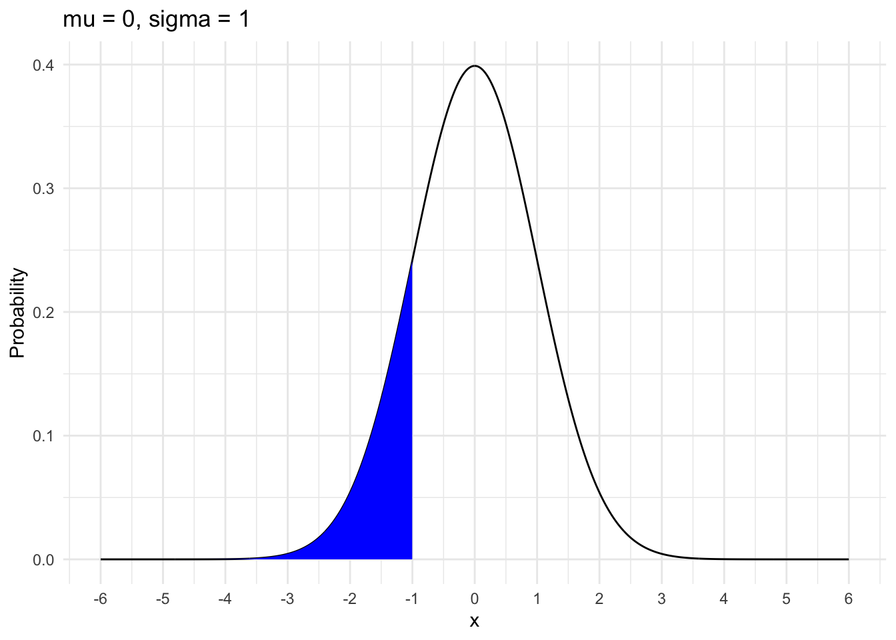
Calculating complex integrals like this is hard. Luckily there are functions that already exist which make this easy! Cumulative distribution functions (CDFs) take some value and tell us the probability of getting that value or less from a particular distribution. In technical terms, CDFs are the anti-derivative of PDFs.
df <- tibble(x = seq(-4, 4, length.out = 1000)) |>
mutate(p = pnorm(x, mean = 0, sd = 1))
std_normal_cdf <- ggplot(df) +
aes(x = x, y = p) +
geom_line() +
scale_x_continuous(breaks = -4:4) +
labs(y = "Cumulative Probability",
title = "CDF for Normal(0, 1)") +
theme_minimal()
std_normal_cdf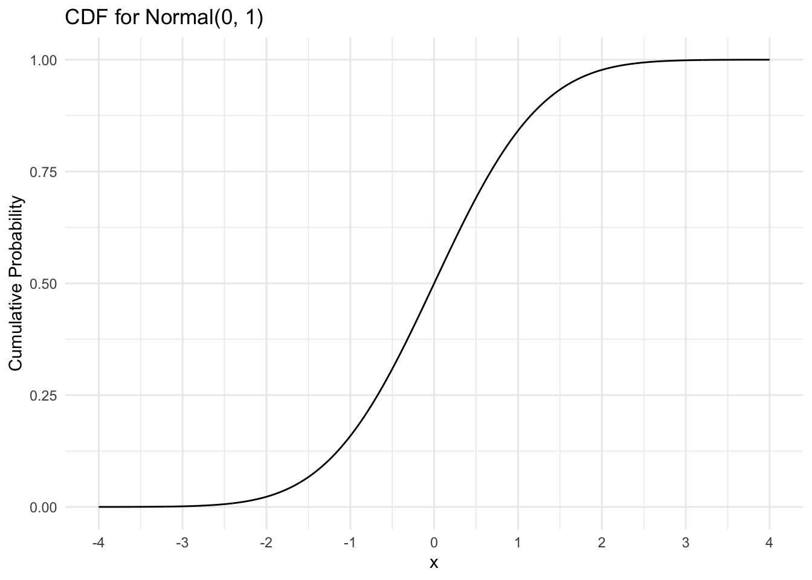
The height of the solid line tells us the probability of getting a value of x or lower.
std_normal_cdf +
geom_segment(x = 0, y = 0,
xend = 0, yend = pnorm(0),
linetype = "dashed") +
geom_segment(x = -4, y = pnorm(0),
xend = 0, yend = pnorm(0),
linetype = "dashed")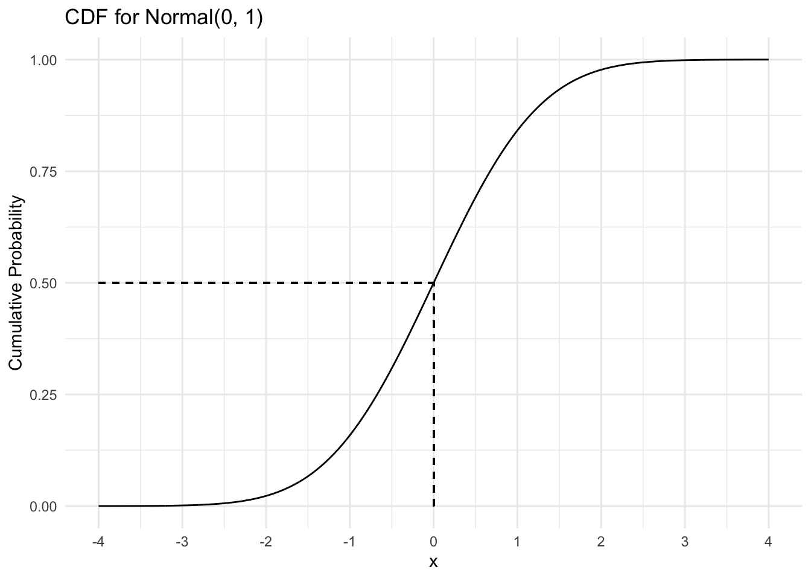
To find the probability of a value in a particular range, we can do some eyeball integration as the graph below demonstrates. The probability of a value between 0 and 2 from the distribution Normal(0, 1) is the vertical distance between the dashed lines (a little less than 0.5).
std_normal_cdf +
geom_segment(x = 0, y = 0,
xend = 0, yend = pnorm(0),
linetype = "dashed") +
geom_segment(x = -4, y = pnorm(0),
xend = 0, yend = pnorm(0),
linetype = "dashed") +
geom_segment(x = 2, y = 0,
xend = 2, yend = pnorm(2),
linetype = "dashed") +
geom_segment(x = -4, y = pnorm(2),
xend = 2, yend = pnorm(2),
linetype = "dashed") +
geom_segment(x = -2, y = pnorm(2),
xend = -2, yend = pnorm(0),
arrow = arrow(length = unit(0.03, "npc")))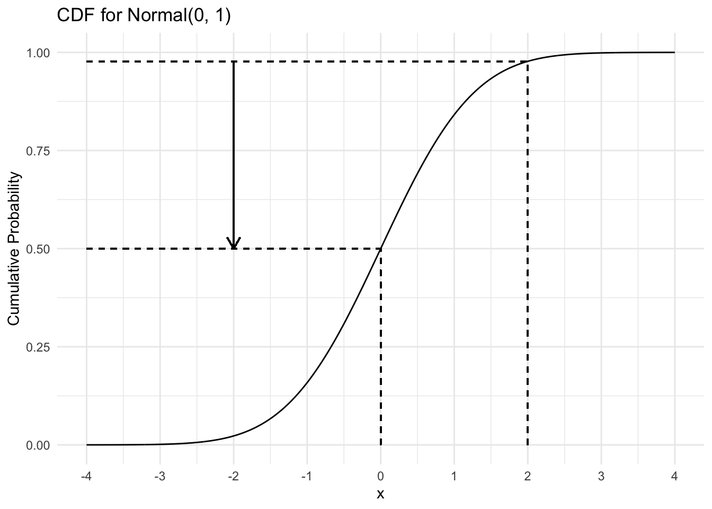
To calculate something like this manually we use the pfunction()s in R. For example, the following code tells us the probability of getting a value less than 0 from Normal(0, 1)
pnorm(0, mean = 0, sd = 1)[1] 0.5We can subtract one pfunction() from another to calculate probabilities over a range of values. The code below gives us the probability of getting a value between 1 and -1 from Normal(0, 1)
A graphical representation of this is shown by the shaded areas in the PDF below.
17.3 Quantile Functions
The quantile function is the inverse of the CDF. It takes a cumulative probability as input and returns the corresponding value from the distribution as output.
df <- tibble(q = seq(0, 1, length.out = 1000)) |>
mutate(x = qnorm(q, 0, 1))
std_normal_quantiles <- ggplot(df) +
aes(x = q, y = x) +
geom_line() +
labs(x = "Percentile", y = "Value") +
theme_minimal()
std_normal_quantiles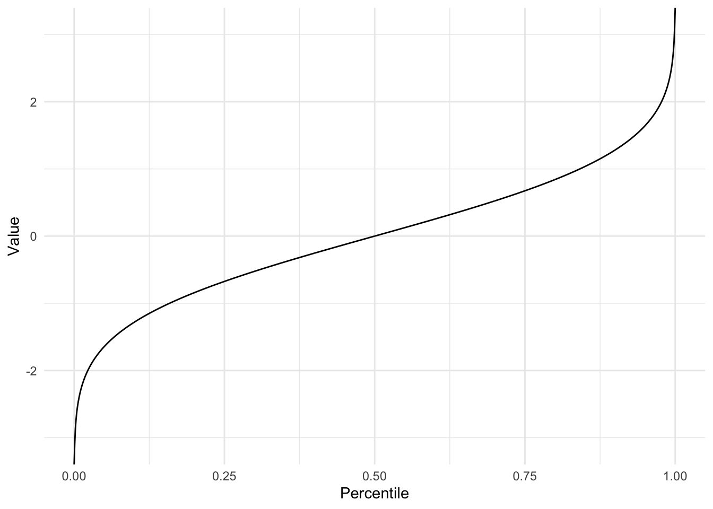
Quantile functions can be useful for calculating the value of something at a specific percentile. The following code calculates the value from a Normal(0, 1) distribution which is at the 99th percentile.
qnorm(.99, mean = 0, sd = 1)[1] 2.326348